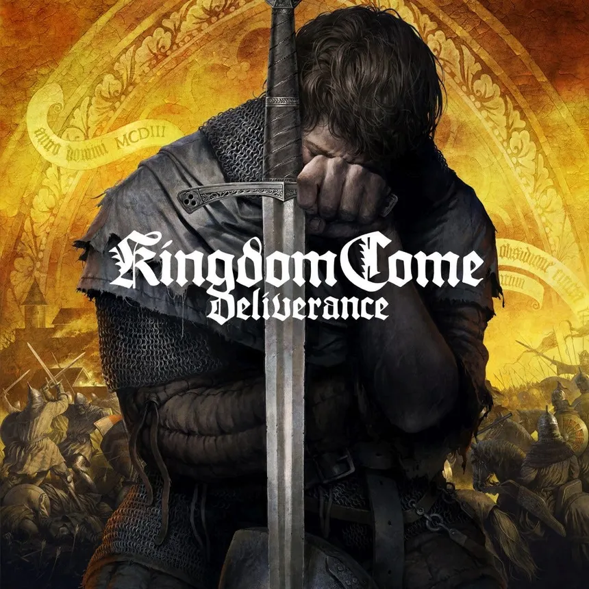
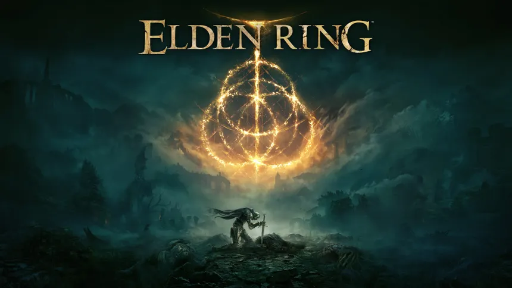
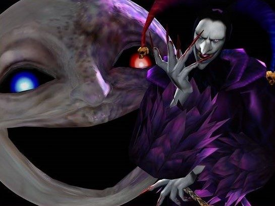
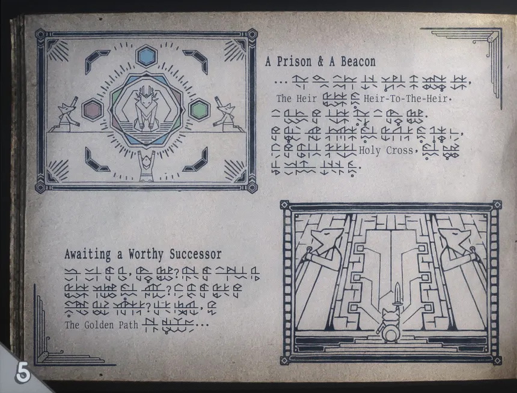
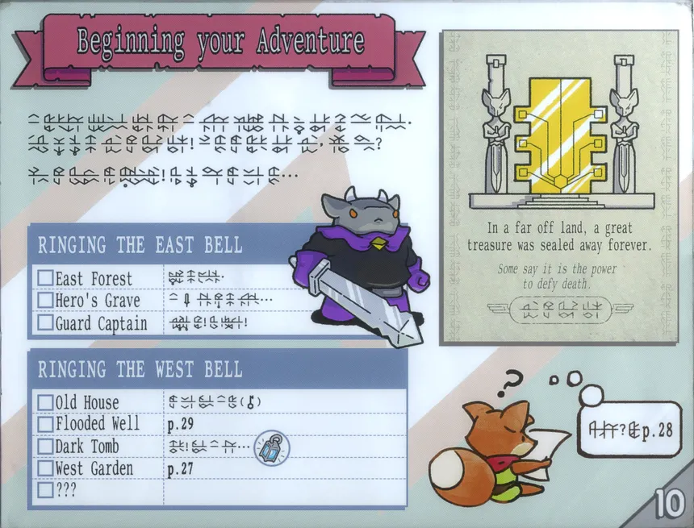

UMA CARTA DE AMOR AOS VIDEOGAMES
UMA EXPERIÊNCIA PESSOAL
LUMIÈRE.
Quero mostrar os jogos que mais me marcaram. Não para tentar convencer vocês a jogar, mas porque quero que entendam como vejo cada um deles, com tanto carinho.
ARQUIVO PESSOAL
Minha biblioteca.
Seis jogos. Seis experiências. Cada um deles deixou alguma coisa comigo.
01
 02
02

03
04
05
06

Devil May Cry 3
INFÂNCIA E NOSTALGIA
Tunic
DESCOBERTA E MISTÉRIO

Kingdom Come: Deliverance
IMERSÃO E EXPLORAÇÃO
Elden Ring
EXPLORAÇÃO E DESCOBERTA
Tom Clancy's Rainbow Six Siege
COMPETIÇÃO E TRAJETÓRIA
DEVIL MAY CRY 3
O exagero faz parte do espetáculo.
DMC3 não tem medo de ser esquisito. Dante e os outros personagens são completamente malucos, extravagantes e exagerados. E é justamente isso que torna tudo tão incrível.
UM UNIVERSO COM PERSONALIDADE
O gótico e o rock parecem ter nascido para se encontrar nesse universo. A arquitetura sombria, os demônios, as roupas extravagantes e toda aquela atmosfera combinam de um jeito que parece natural.


Um mundo sombrio que nunca perde sua atitude.
UMA LEMBRANÇA QUE FICOU

Dante e Vergil.
Mas, quando penso em DMC3, existe uma lembrança que sempre volta primeiro: Dante e Vergil. O confronto, a rivalidade e todas aquelas tentativas de vencer o Vergil... É uma das partes mais memoráveis que guardo desse jogo.

01 — O COMEÇO DE TUDO
Um mundo cheio de perguntas.
Você acorda em uma praia. Não sabe onde está, o que aconteceu ou para onde deveria ir. Tudo parece esconder alguma coisa. E, desde o primeiro momento, a vontade de descobrir o que existe naquele mundo fala mais alto.
02 — UMA DESCOBERTA
Finalmente, um manual!
Depois de explorar um pouco, você encontra um manual. Finalmente, algo que pode ajudar a entender aquele mundo! Talvez agora algumas respostas comecem a aparecer.


03 — NOVAS DÚVIDAS
Mas estão faltando páginas.
O manual está incompleto. Suas páginas estão espalhadas pelo mundo, e encontrá-las passa a fazer parte da aventura. Mas, ao folhear aquelas páginas, você percebe que existe um problema ainda maior...
04 — O GRANDE MISTÉRIO
Você precisa aprender uma nova língua.
Todo aquele conhecimento está ali, diante de você. O manual guarda informações, segredos e partes importantes daquele universo. Só existe um detalhe: tudo está escrito em uma língua fictícia.

E aprender a interpretar aquela escrita não é apenas um detalhe ou uma curiosidade. É parte fundamental da jornada.
05 — O QUE TORNA TUDO ESPECIAL
É isso que me encanta em Tunic.
Para mim, uma das coisas mais fascinantes do jogo é essa sensação de estar sempre descobrindo algo novo. Você começa sem entender nada, encontra um manual e descobre que precisa aprender a própria língua daquele mundo para compreender seus segredos.
É essa vontade constante de descobrir, entender e finalmente conectar as peças que torna esse universo tão cativante para mim.